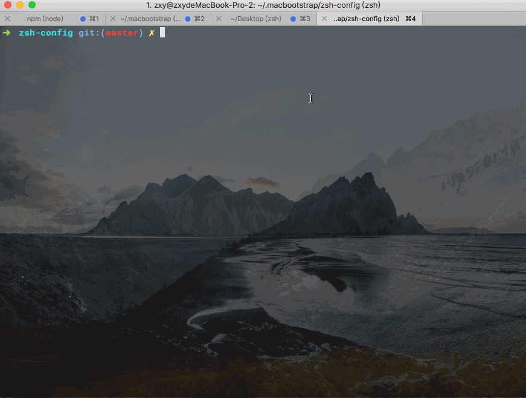
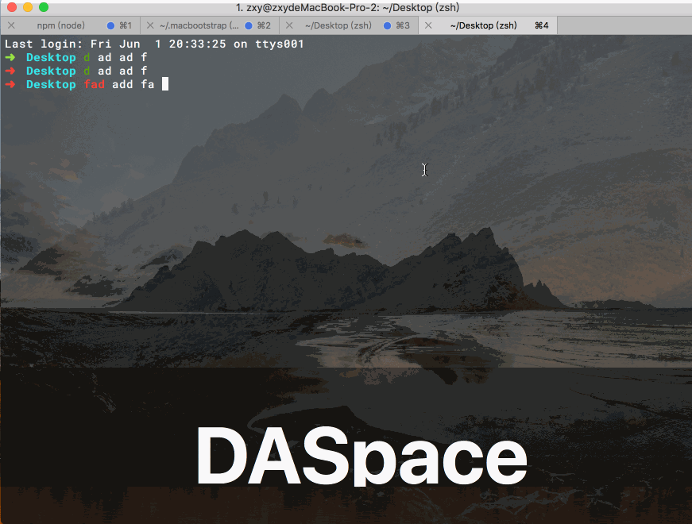

终端神器 iTerm2
iTerm2 是一个用来取代系统终端的命令行工具，功能比原生的终端程序强大很多，可以一行命令安装：
brew cask install iterm2
光标移动
上一章 系统快捷键进阶 一节中曾经介绍过光标移动的快捷键，其中以 Ctrl 键开头的快捷键依然可用，比如移动到行首、行尾，向左/右移动或删除字符等等。
但在 iTerm2 中无法使用 Option 键进行单词跳转，因此需要自行配置快捷键，我选择用 Command + ← 来表示光标向左移动一个单词。对应的，向右移动一个单词就是 Command + →。打开设置，添加这两个快捷键：

选择文本
iTerm2 中选择文本有三种方式，分别是：
- 双击：选中单词
- 三击：选中整行
- 四击：智能选择
智能选择是一个比较有意思的功能，完整的介绍可以参考官方文档。对于我来说，以下几种情况下用智能选择是非常棒的：
- 代码片段，比如智能选择会自动选中
namespace::identifier以及foo.bar.baz这种语法 - 双引号内的字符，比如
"this is a quoted string" - 电子邮件，智能选择会选中整个邮件地址
- 完整的 URL，智能选择会选中 scheme
另外，iTerm2 默认选中即复制，所以不用额外的 Command + C 这一步了。
Command 键
Command 主要用来打开文件或者 URL。对于输出到终端的文件名或者 URL，我们可以按住 Command 键点击它，就可以直接打开了。
此外，按下 Command + Option 还可以选中矩形范围内的文本。
Tab 和 Pane
按下 Command + T 可以新建一个 Tab，每个标签页的后面都会标记一个序号，通过 Command + 序号 就可以在多个页面之间切换了，或者用 Command + [ 和 Command + ] 来切换到左侧或者右侧的标签页。
同一个 Tab 内，还可以切分出多个 Pane，有两种切分方式：
- Command + D：水平切分，切分出一左一右两个 Pane
- Command + Shift + D：垂直切分，切分出一上一下两个 Pane
通过 Command + Ctrl + 方向键 可以调整每个 Pane 的大小，通过 Command + Option + 方向键 可以切换 Pane。
快速编辑
有时候，如果上一条命令出现了某个小错误，其实不必重新打一遍，可以使用 ^old^new 的写法进行替换：

对于特别长的命令，可以使用 zsh 提供的快捷键 Ctrl-x + Ctrl-e 进入 vim 编辑：

背景图
打开设置，选择背景图案并设置好透明度：

最终效果图如下：